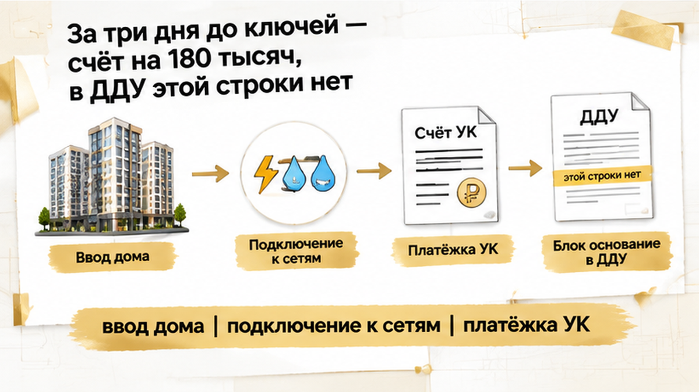
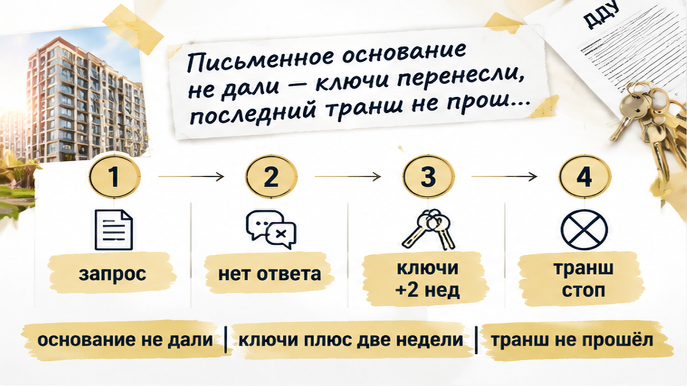
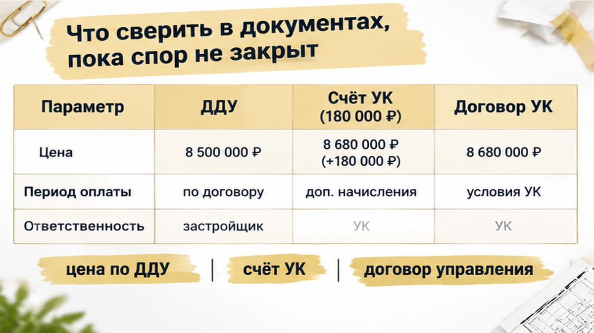
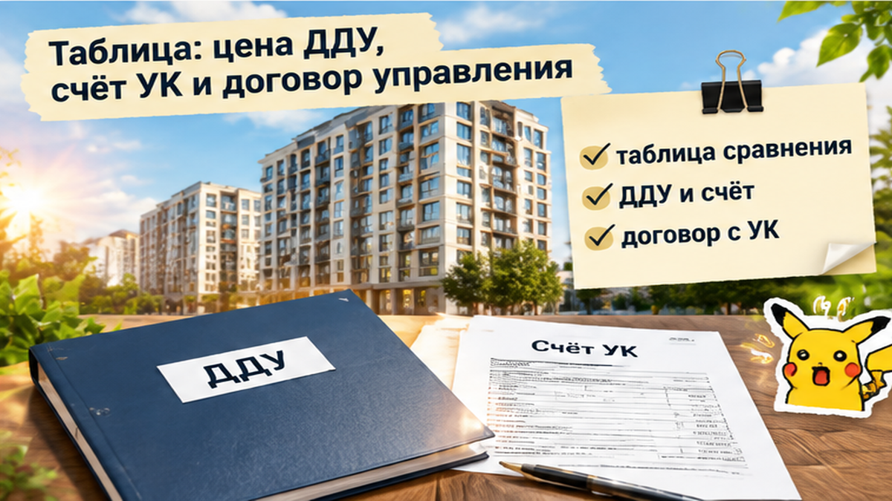

За три дня до ключей семья в Тюмени получила от УК счёт на 180 000 ₽: в ДДУ такой суммы нет, а без оплаты покупателей обещали не допустить к подписанию акта. Дома двое детей, коробки собраны, приёмка согласована — осталось осмотреть квартиру и получить ключи. Но в личном кабинете появились расходы на «ввод дома в эксплуатацию», «подключение к сетям» и «формирование управляющей компании». Застройщик в ответ сослался на «типовой договор с УК». Для семьи вопрос оказался не только в незапланированных деньгах: без передаточного акта мог задержаться последний ипотечный транш.
Я — Святослав Шакин, The Риэлтор, Тюмень. В Telegram и MAX разбираю документы по недвижимости простым языком: где обязательство покупателя, а где пока только чужое «так положено».
Самый неудобный момент для нового счёта — когда переезд уже собран в коробки. Покупатель думает о ключах, мебели и детской комнате. Ему совсем не хочется открывать договор заново. Хочется спросить: «Если заплачу, точно всё отдадите вовремя?»
Но я бы начал с другого вопроса: «Покажите, где я обязался это оплатить». Не потому, что любой счёт управляющей компании заведомо неправильный. А потому, что сумма в личном кабинете и обязанность покупателя — не одно и то же.
В этой истории в ДДУ, приложениях и расчёте цены квартиры не было услуги на 180 тысяч рублей. Отдельную обязанность заплатить перед приёмкой за ввод дома, подключение к сетям или создание УК документы тоже не содержали. Значит, одного счёта недостаточно, чтобы понять основание требования.
Здесь важно развести два договора. ДДУ — про участие в строительстве, цену квартиры, сроки и порядок оплаты. Договор управления — про управление домом, содержание общего имущества, работы, услуги и плату за них. Это связанные с одной квартирой, но разные отношения.
Обычная реакция на пороге переезда: «Наверное, у всех так». Рабочий подход другой: положить рядом счёт и подписанные документы. Платёж не становится частью цены квартиры только потому, что его предъявили перед ключами. Нужно найти основание, а не угадать его по моменту выставления.

Названия в счёте звучат весомо. Дом ведь действительно нужно ввести в эксплуатацию, к сетям подключить, управление организовать. Но между «это необходимо дому» и «за это отдельно должен заплатить покупатель» нужен документ, а не устное объяснение.
«Ввод дома в эксплуатацию» связан с разрешением на ввод и последующей передачей помещений. По 214-ФЗ объект передают после получения разрешения и уведомления участника о готовности квартиры; передачу обычно оформляют актом. Само разрешение не означает, что покупатель согласился на любую доплату перед подписанием.
«Подключение к сетям» может означать технологическое присоединение или работы с коммунальной инфраструктурой. «Формирование управляющей компании» выглядит как организационный расход. По одному названию нельзя установить ни состав услуги, ни её стоимость, ни того, кто обязан её оплачивать.
После ввода застройщик заключает договор с управляющей организацией либо управляет домом сам в предусмотренном законом порядке. Договор управления должен определять работы, услуги и порядок платы. Но ежемесячное содержание жилья и разовый счёт за «формирование УК» нельзя складывать в одну корзину только потому, что получатель денег один.
Поэтому на фразу «это обязательный платёж» нужен спокойный ответ: «Обязательный на основании какого документа и для кого именно?» Это не спор ради спора. Так выясняется, относится ли расход к покупателю и почему его предъявили именно сейчас.
Здесь легко запутаться, если сложить всё в одну папку с названием «платёж за квартиру». Но документов несколько, и каждый отвечает за своё.
ДДУ определяет цену квартиры, срок и порядок её оплаты. Договор управления — перечень работ и услуг, их стоимость и порядок внесения платы. То, что счёт пришёл от назначенной застройщиком УК перед выдачей ключей, само по себе не превращает его в часть цены по ДДУ.
Семье сообщили: без перечисления примерно 180 000 ₽ покупателей не допустят к подписанию передаточного акта. В счёте стояли три формулировки: «ввод дома в эксплуатацию», «подключение к сетям» и «формирование управляющей компании».
Покупатели подняли ДДУ, приложения и расчёт цены квартиры. Такой суммы и таких работ там не нашли.
Застройщик в ответ сослался на «типовой договор с УК». Но важен не ярлык документа, а его содержание. Нужно увидеть конкретный пункт, где возникает обязанность именно этого участника оплатить счёт, а также понять, какая услуга оказана, как рассчитана сумма и почему её связывают с актом приёма-передачи.
Проверка здесь идёт не по принципу «УК сказала — значит, так и есть». И не по принципу «в ДДУ нет — значит, вопрос закрыт». Нужна цепочка:
Части 14 статьи 161 и статья 162 Жилищного кодекса регулируют заключение договора управления, его содержание и порядок определения платы. Но ссылка на эти нормы не делает любую сумму перед ключами обязательной по ДДУ.
Письмо Минстроя от 9 февраля 2026 года № 6284-ДН/04 также не заменяет документы по конкретному дому. В нём указано, что порядок платы между застройщиком и временной управляющей организацией определяется договором. Значит, нужно смотреть сам договор, расчёт и основание начисления, а не только пересказывать его название.
Отдельно в материалах есть региональный пример с перерасчётом более чем на 2 млн ₽ по начислениям в 179 помещениях после вмешательства прокуратуры. Это не готовый ответ для каждой новостройки. Но хороший повод не принимать платёжку на веру: сначала выяснить, откуда взялась сумма.
Ключевой вопрос звучит просто: если 180 000 ₽ обязательны для получения акта, где именно это обязательство записано и каким документом подтверждено?

Семья не стала переводить деньги только потому, что счёт появился в личном кабинете, а менеджер объяснил ситуацию словами «так принято». В УК и застройщику направили запросы: показать документы, расчёт и письменное основание требования.
До назначенной даты приёмки ответа, который позволил бы сопоставить 180 000 ₽ с ДДУ и договором управления, не поступило.
Позиция УК осталась прежней: без оплаты — без допуска к подписанию акта. Застройщик продолжил ссылаться на типовой договор. В результате приёмку не провели, а выдачу ключей перенесли на две недели.
Для семьи это оказался не только спор о платёжке. В ипотечной сделке передаточный акт мог понадобиться банку для выдачи последнего транша. Пока акт не подписан, банк транш не выдал.
Именно здесь важно не говорить об ипотеке общими словами. Условия зависят от конкретного кредитного договора. В одной сделке банку нужен акт, в другой — ещё один документ или подтверждение регистрации. Проверять нужно свой пакет, а не чужой опыт из чата.
Поэтому семья сохранила счёт, уведомления о приёмке, переписку, записи в личном кабинете и подтверждения направленных запросов. Отдельно зафиксировали первоначальную и новую даты приёмки. Такая хронология показывает, когда возникло требование, что именно просили предоставить и после какого события перенесли подписание акта.
Сюда же относится ипотечная цепочка: акт, ввод и ипотечный транш — это связанные, но не взаимозаменяемые документы. Наличие разрешения на ввод не означает автоматически, что банк уже перечислит деньги. И наоборот: задержка транша не отвечает на вопрос, законно ли требование УК.
Есть и вторая проверка — обещания застройщика по самой квартире. В материале о расхождении между условиями ДДУ и фактическим состоянием на приёмке разобрана ситуация, когда вместо обещанной чистовой отделки покупатели увидели голые стены: что сверять между ДДУ и квартирой.
Документы здесь работают как связка. ДДУ показывает цену и порядок оплаты. Счёт — что именно требуют перечислить. Договор управления — какие услуги и платежи предусмотрены. Кредитный договор — какой документ нужен банку. Если одного звена нет, устное «без этого ключей не будет» не объясняет, откуда взялась обязанность.
В этой истории итог на момент разбора был конкретным: 180 000 ₽ без письменного основания семья не перевела, ключи перенесли на две недели, акт не подписали, последний транш не выдали. Дальше вопрос решается не громкостью требований, а сопоставлением документов и фиксацией каждого шага.

Не начинайте с телефонного спора о том, «положено» ли платить управляющей компании. Скачайте счёт из личного кабинета, сохраните письмо, дату отправки, назначение платежа и приложения. Отдельно зафиксируйте, кто и когда сообщил: без оплаты акт приёма-передачи подписан не будет.
Здесь важна не громкость разговора, а последовательность документов. Счёт появился перед ключами — значит, нужно восстановить всю цепочку: когда назначили приёмку, когда выставили 180 000 ₽, на что сослались и почему оплату связали с актом.
Сопоставьте счёт с ДДУ, приложениями, расчётом цены, графиком платежей, дополнительными соглашениями и пунктами о передаче квартиры. В ДДУ должны быть указаны цена, срок и порядок её уплаты. Поэтому строки «ввод дома в эксплуатацию», «подключение к сетям» или «формирование управляющей компании» нельзя автоматически считать частью цены квартиры только потому, что они появились в личном кабинете УК.
Направьте письменный запрос УК и застройщику. Попросите указать:
Попросите ответить письменно, даже если до этого уже был разговор по телефону. Устное «так принято» не показывает ни состав услуги, ни размер платы, ни основание отказа в оформлении передачи.
Не смешивайте разные платежи. Договор управления должен описывать перечень работ и услуг, а также порядок определения и изменения платы. Но это не означает, что любая сумма от временной или назначенной УК автоматически входит в ДДУ либо становится платой за содержание жилья.
Письмо Минстроя от 9 февраля 2026 года № 6284-ДН/04 указывает, что порядок платы между застройщиком и временной управляющей организацией определяется договором. Однако письмо не заменяет подписанные документы и расчёт: именно в них нужно искать основание конкретного начисления.
Отдельно проверьте ипотечную часть. Банк может требовать акт приёма-передачи для выдачи последнего транша, но точное условие находится в кредитном договоре заёмщика. Запросите у банка письменное подтверждение: какой документ нужен, что произойдёт при переносе приёмки на две недели и сохраняется ли срок его предоставления.
Если дом уже сдан, это ещё не отвечает на вопрос о спорном счёте. Так же и назначенная дата приёмки не делает любую платёжку обязательной. В материале о новостройке без разрешения на ввод и неполученном втором транше я разбирал, почему акт, ввод и ипотечная цепочка — не взаимозаменяемые понятия.
А обещания в ДДУ лучше сверять с тем, что реально предъявляют на приёмке. В этом помогает разбор о ситуации, когда в документах обещали чистовую отделку, а на месте оказались голые стены: обещания в ДДУ и состояние квартиры.

Разложите документы по трём колонкам. Таблица не заменяет юридическое заключение, но быстро показывает, где появляется спорная строка и какой документ её должен подтверждать.
| Что сравниваем | Цена по ДДУ | Счёт УК на 180 000 ₽ | Договор управления |
|---|---|---|---|
| Кто устанавливает | Застройщик и покупатель при заключении ДДУ | УК или лицо, выставившее начисление | Собственники и управляющая организация либо предусмотренный законом порядок управления |
| Что должно быть указано | Общая цена квартиры, порядок и сроки оплаты | Назначение, период, расчёт и основание платежа | Перечень работ и услуг, порядок определения и изменения платы |
| Какие строки проверять | Цена квартиры, доплаты, приложения и дополнительные соглашения | «Ввод дома», «подключение к сетям», «формирование УК» и другие разовые позиции | Содержание общего имущества, коммунальные услуги и условия начислений |
| Связь с актом | Передача квартиры оформляется после исполнения условий ДДУ и подготовки передаточных документов | Нужно проверить, есть ли основание связывать платёж с подписанием акта | Наличие договора управления не отвечает автоматически на вопрос о разовом счёте до приёмки |
| Что запросить | ДДУ, приложения, расчёт цены и дополнительные соглашения | Расшифровку суммы, правовое основание и подтверждающие документы | Текст договора, порядок платы и документы, подтверждающие начисление |
Сопоставьте счёт с ДДУ до перевода денег. Запросите письменное основание у УК и застройщика. В кредитном договоре проверьте, какой документ нужен банку для последнего транша.
В этой истории семья не перевела 180 000 ₽ без письменного основания. Ключи перенесли на две недели, акт не подписали, последний транш не выдали, а спор остался открытым. Это не доказывает автоматически правоту одной из сторон. Но хорошо показывает цену формулировки «так принято»: без документов непонятно, за что платить и почему платёж связывают с передачей квартиры.
Заплатить 180 тысяч, которых нет в ДДУ, ради своевременного получения ключей — или требовать письменное основание, рискуя задержкой приёмки и ипотечного транша?
Если нужно разобрать документы по новостройке в Тюмени, подписывайтесь на Telegram The Риэлтор | Тюмень или заглядывайте в MAX. Там я показываю, где в ДДУ, акте и ипотечных документах искать основание платежа.